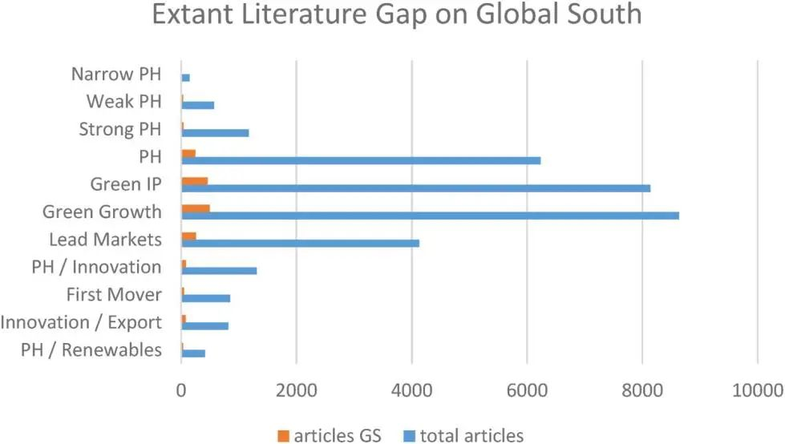
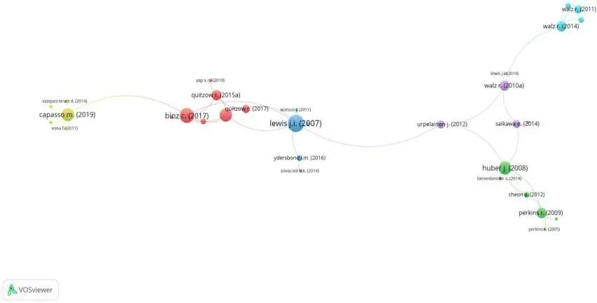
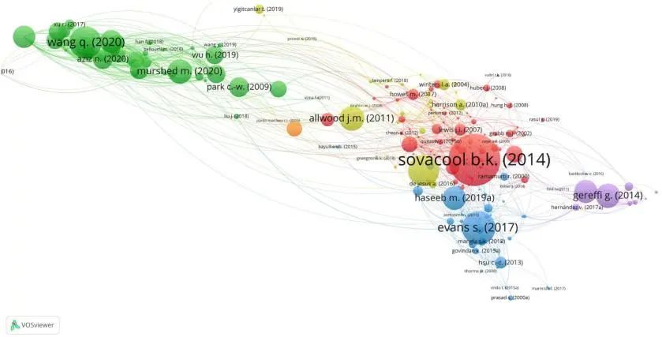
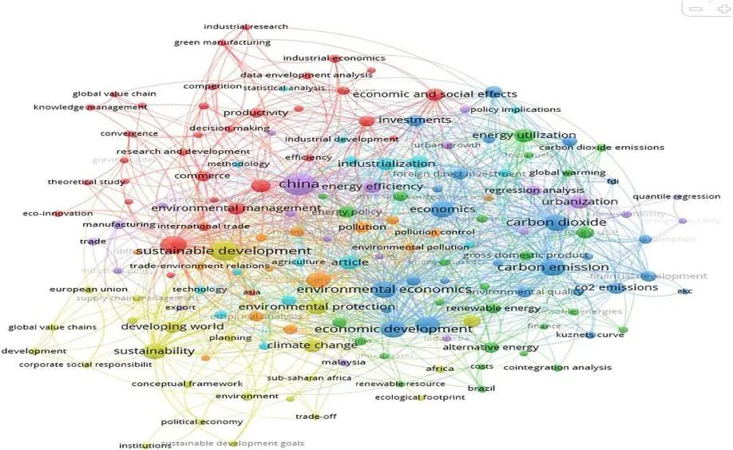
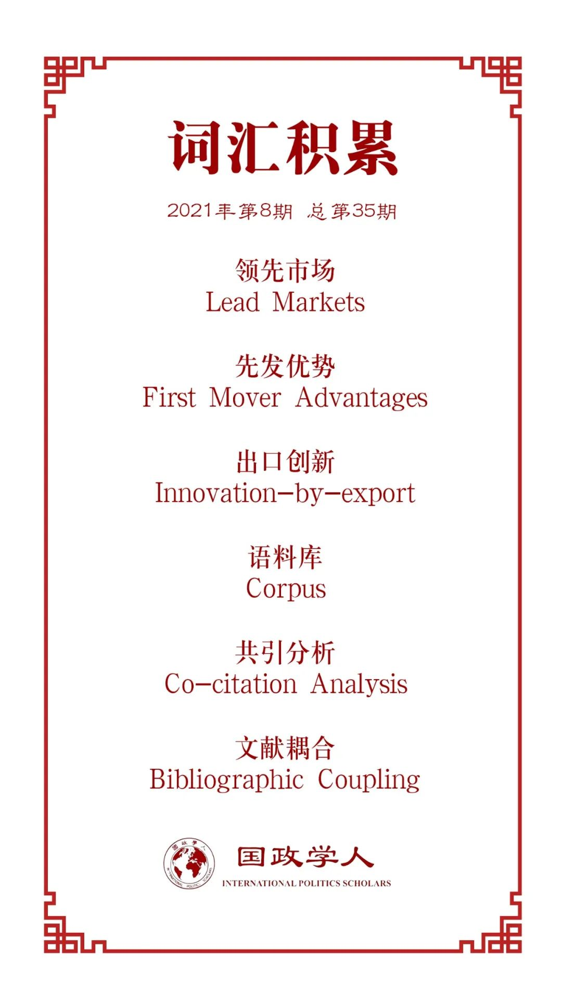

收录于合集 #政策分析 5个

作品简介
【作者】 Kyle S. Herman，英国伦敦大学公共政策学院政治学系讲师、全球治理研究院研究员，研究方向为多边环境政策、能源政策、气候治理等。
【编译】 尤力（国政学人编译员，上海外国语大学国际关系与公共事务学院）
【校对】 徐一君 唐一鸣
【审核】 丁伟航
【排版】 韩心蕊
【美编 】臧泽华
【来源】 Kyle S. Herman (2021). Green growth and innovation in the Global South: a systematic literature review, Innovation and Development , https://doi.org/10.1080/2157930X.2021.1909821
【归档】 《国际关系前沿》2021年第8期，总第35期。
期刊简介
《创新与发展》（ Innovation and Development ）出版关于创新的研究，涵盖经济学、社会学、政治学和科技政策。据数据显示，2020年该期刊的SJR为0.254，Impact Score为1.57。
发展中国家的绿色增长与创新：
一篇系统的文献综述
Green growth and innovation in the Global South: a systematic literature review
Kyle S. Herman
内容提要
近年来，人们对绿色增长和创新的关注度普遍提高。 对于一国而言，国内绿色增长政策可以实现环境保护和经济发展的“双赢”。 但是，学界在这方面– 尤其是政策对发展中国家的影响方面文献研究较少，令人失望。一方面，发展中国家可以利用绿色增长政策提高国际竞争力，实现技术的“跨越”，并通过技术创新在经济和环境方面“追赶”发达国家。另一方面，发展中国家的温室气体排放量正在迅速增长，如果没有相应的绿色增长和创新政策，就很难满足其应对气候变化的迫切需求。在此背景下，本文对发展中国家的绿色增长、创新和环境技术进行了广泛的系统文献调查和分析。
文章导读
01
背景
2008-2009年全球金融危机爆发后，“绿色增长”开始引起人们的关注，全球各国纷纷推出绿色刺激计划以提振国内经济。值得注意的是，这些努力并不局限于发达国家，中国在刺激绿色增长的支出方面就超过了美国。由于绿色增长政策同时满足发展、环境和经济需求，因此研究境政策及其对经济的异质性影响尤为重要。事实上，这些影响越来越被视为发展中国家实现技术和经济“赶超”的有效手段，并被认为是实施绿色产业政策的主要原因。
然而，鉴于发展中国家的温室气体排放量将很快超过发达国家，如果现有文献中对绿色增长政策和相关机制的研究仍不完善，将无法满足国内日益增长的可持续发展需求，也不利于全球气候和环境目标的实现。
在此背景下， 本文利用开源引用和关键词映射软件 （VOS- Viewer）进行了广泛的系统文献调查，对发展中国家绿色增长的研究成果进行系统和差异分析，找出并讨论了常见的关键词、杰出的研究人员及其各自的概念和理论贡献。
02
概念和定义
2.1 绿色增长与可持续发展
对于发展中国家来说，绿色增长被视为可持续发展扩大政策目标的一个子集。 绿色增长和可持续发展政策在一定程度上都融入了环境和气候政策，但与后者关注减少贫困和社会不平等、环境进步等问题不同，绿色增长更倾向于关注研发、投资以及绿色技术和基础设施开发等政策。此外，绿色增长依赖于绿色产业政策、创新和研究政策。总的来说，绿色增长可以追溯到发展经济学中的概念，如：（1）领先市场；（2）政策诱导的创新和出口创新；（3）先发优势；（4）政策先锋国家，（5）跨越式发展和追赶。绿色增长的每一个特征都在下面的小节中展开。此外，每个类别都指导了第3节中详述的文献搜索策略，并反映在第4节对文献结果的解释中。
2.2 环境法规与波特假说
在著名的波特假说（PH）中，波特和范德林德指出： 灵活的环境法规有利于国内经济发展 。 因为环境法规能够诱导企业，特别是已经具有高度竞争力的企业做出创新反应。这种创新补偿可能会超过企业承担的监管成本，形成相对于不受类似法规约束的外国公司的绝对优势，这表明精心构建的环境监管可以提高全球竞争力。因此，PH值也被视为最原始的绿色增长概念。它不是一个线性模型，而是将创新、研发和技术发展概念转化为“技术推动或市场拉动”产生的动态过程。这些过程可以由政府法规催化，并由国内的创新和技术能力支持。
为了使得波特假说更加直观，Jaffe和Palmer引入了四种不同的解释变量。弱PH值（The Weak PH）指适当的环境法规会刺激创新；强PH值（The Strong PH）指环境监管通常会提高企业竞争力；狭义PH值（The Narrow PH）指灵活的监管政策给予企业更大的创新激励，因此比规范性的监管形式更好（创新诱导）；狭义的强PH值（The Narrowly-Strong PH）指在充满活力的国际竞争环境中，政府可以通过制定环境法规诱导环境技术的早期创新来获得动态比较优势（提高竞争力）。
其中，狭义的强PH值体现了一些“全球竞争力”问题，这些问题强调了发展中国家的国内绿色增长举措。着眼于狭义的强PH值，本节的后面部分将进一步解释发展中国家在全球竞争环境下的绿色增长和发展特征。
2.3 绿色产业政策
绿色产业政策是国内绿色增长的关键政策工具。 主要形式包括产业促进、创造就业、直接补贴、税收抵免和市场创造政策等，在一定程度上可以帮助确定哪些技术可以获得市场主导地位。
环境技术创新的含义是绿色产业政策可以作为绿色增长的动力，但必须同时考虑国家创新系统动态、内生比较优势、以及对全球市场气候技术需求的理解。因此，除了该政策的潜在国内影响外，精心构建的绿色产业政策也可以解释外国环境政策的严格性。
简言之，虽然绿色产业政策可以通过揭示政府的意图来减少未来政策轨迹的不确定性，但它们应该被视为可能与全球环境和政策要求相冲突的国内政策工具。
2.4. 领先市场、先发优势和出口创新
领先市场被定义为全球首先创新并获得成功的国家。从政策角度来看，重点往往是如何在领先市场国家引导技术创新和发展，即领先市场可以开发清洁技术出口给国内公司创造持久的竞争优势。虽然领先市场通常被认为是发达国家的市场，但在中国展开的电动汽车和储能技术革命表明，发展中国家也可以成为领先市场，创造先发优势，同时支持其出口部门。
同时，这也引出了一个密切相关的概念：出口创新。这一概念首先在发展经济学的文献中出现，现在正在环境技术和创新的相关文献中被广泛提及。其核心问题是：一个国家如何保持环境技术出口的竞争力？创新能力是通过技术知识、国家创新体系建立起来的，并通过区位优势得到进一步增强。 因此，知识是出口创新的关键驱动力，关注国家创新体系和内向知识转移，有助于保持出口优势。
2.5. 政策先驱国家、追赶和国家创新体系
“环境政策先驱国家”是指拥有最早或最严格环境法规的国家。这些国家先于他国引入绿色增长政策，在两个基本方面不同于领先市场国家。首先，其政策更为严格，很可能会导致技术和知识流入；另一方面，内生因素或与环境政策关系不大的因素都有可能导致领先市场的形成，但政策先驱国家则更多利用内向知识、技术和创新溢出效应，而正是这种向其他国家学习技术的能力，为国家层面的“赶超”奠定了理论基础。最后，为了给国内企业和产业带来优势，政策先驱建立了完善的国家创新体系，确保外来知识和技术溢出提高国内绿色竞争力。
03
研究方法
鉴于Scopus 高级检索在提供关键词、引文数据方面的出色表现，本文以Scopus为文献检索工具。为了发现现存文献中的主题相似性，本文采用了两种文献计量技术：（1）文献耦合；（2）共引分析。前者更擅长于对较新的中庭进行聚类，而后者更擅长识别文献中的历史趋势。最后，部署自动关键词提取，以完成系统的文献搜索和审查。这显示了在语料库的摘要和标题中发现的常见关键词，以及它们之间的关系，有助于指导未来的研究。
 图1
04
研究结果
这一节展示了包含所有主题的发展中国家语料库的结果，主要分为三个部分：1）共引分析；2）文献计量耦合；3）文本和关键字三个部分三个部分。最后，本文提供了一个综合说明，以证明存在的主要差距以及对未来研究的影响。
4.1. 共引分析
根据共引分析，关于发展中国家的文献主要有五大研究支柱：1）追赶；2）可再生能源创新；3）技术和国家创新体系；4）绿色产业政策，5）波特假说。然而，值得注意的是，这些结果并不代表整个现存文献，因为Scopus搜索直接指定了其中一些主题。然而，有趣的是，“追赶”、“技术和国家创新体系”、“跨越”和“溢出”在整个语料库中都有大量的代表，因为这些类别在Scopus搜索中没有指定。这表明，正如第2节所预期和讨论的那样，这些主题与图2中的搜索类别密切相关。

图2 语料库2发展中国家共引分析
注：显示的文章来自与发展中国家研究重点（语料库2）的共引分析。每篇文章至少引用10次。
4.2. 文献耦合
文献耦合分析的结果广泛概述了文献中主题领域或每个集群中包含的研究趋势。从国家角度来看，研究对象大多集中在中国，但也包括巴基斯坦、沙特阿拉伯等国。从研究领域角度来看，“碳排放强度”和“人工神经网络”是新兴的研究领域。从区位角度来看，最新的研究集中在中国和其他东亚经济体周围，主要是因为它们成功地实施了绿色增长政策以提振经济，并在关键气候和环境关键技术方面创造了先发优势。
绿色集群是时效性强，其核心是中国、二氧化碳排放和经济增长。同时，红色聚类显示了许多来自共同引用分析的相同文章。蓝色集群也是近期出现，主要关注企业层面（而非国家层面）的研究问题。紫色集群主要关注全球价值链和治理。

图3 语料库2发展中国家文献耦合，聚类显示
注：显示的文章来自与发展中国家研究重点（语料库2）的文献耦合分析。每篇文章至少引用10次。
4.3. 关键词分析
关键词之间的聚类和关联性也显示了有趣的结果。“中国”、“可持续发展”、“工业化”、“环境经济学”和“碳排放”在语料库中都有很好的代表性。紫色聚类中突出显示的是：“中国”、“能源效率”、“制造业”、“回归分析”和“城市化”。在红色集群中的是：“商业”、“生产力”、“研发”和“知识管理”。在蓝色集群中为：“二氧化碳”、“碳排放”、“二氧化碳排放”和“库兹涅茨曲线”。在黄色集群中为：“发展中世界”、“可持续性”、“全球价值链”、“欧盟”和“政治经济”。在绿色集群中为：“能源政策”、“全球变暖”和“能源利用”。在浅蓝色集群中为：“工业化”、“农业”、“技术”和“统计分析”。最后，结果中的其他地区和国家包括：“马来西亚”、“撒哈拉以南非洲”、“非洲”、“巴西”、“印度尼西亚”、“印度”和“美国”。

图4
这一部分主要对文献的系统回顾结果进行了讨论，确定了关键研究的主题及其结构。其中，共引分析显示，尽管论文数量不多，但论文结构紧密，对发展中国家、绿色增长、创新和发展进行了有力的分析。通过扩大搜索范围，文献耦合分析表明，尽管仍存在重大差距，但近年来该领域的研究有所上升，特别是对领先市场和出口创新、发展中国家可再生能源技术显著增长现象的研究。然而，这些研究仍然被发达国家的研究所主导。因此，考虑到发展中国家温室气体排放量的惊人增长，需要对发展中国家进行更多的研究。最后，关键词分析提供了整个语料库中关键主题和关键词的重要概述，结果表明，中国已成为这一领域的主要研究重点，主要因为其在2010年公开绿色增长战略以来，在环境和清洁技术方面所表现出的实力。
译者评述
总的来说，绿色增长政策是指有利于实现环境保护和经济发展双赢的干预措施，由减少碳排放和污染、提高能源和资源利用效率的公共和私人运动驱动，旨在促进低碳、资源高效利用和社会包容性的经济发展。
纵观本系统综述所揭示的文献，除了揭示绿色增长这一研究领域的南北差异外，一个更为积极的结论是： 绿色增长不仅可以作为发达国家经济增长的政策工具，也可以成为发展中国家经济增长的引擎。 事实上，一旦政策工具得到有效部署，与基本上已经获得这些回报的发达国家相比，发展中国家可能会获得更大的技术、环境和经济效益。
从几个角度来看，这些都很重要。首先，发展中国家可以通过绿色增长和绿色产业政策的实施实现技术的跨越和对发达国家的追赶。其次，随着发展中国家通过绿色增长迎头赶上，它们往往会获得更多的外来投资、知识和技术流动，这反过来会促进本国的环境改善和技术进步。对这些政策机制的分析、对经济和环境有益影响的经验证据以及可以吸取的经验教训对发展中国家至关重要。
另外，本文为未来的研究人员，特别是发展中国家的研究人员提供了实证和理论基础，尝试性提出了未来的重点研究方向：（1）国内绿色增长如何与全球气候和环境政策需求相互作用；（2）发展中国家如何通过绿色增长和环境创新实现“追赶”和“跨越”；（3）绿色产业政策和国家创新体系能力的特殊结合如何使发展中国家能够扩大经济规模并向低碳轨道过渡。
最后，本文还引向一个议题，即中国作为发展中国家中的一员，如何进一步实现绿色增长。首先，与各国政府及国际组织开展合作，积极推动全球向碳中和过渡。同时，值得注意的是，一带一路倡议作为一项全球基础设施发展倡议，凭借巨大的基础设施投资，不仅在世界经济中的作用日益凸显，还成为了实现绿色增长目标的中坚力量。其次，在加入《巴黎协定》等国家间框架的基础上，在本国采取多样化措施应对气候问题，加快立法和政策进程。最后，企业有望有望在该议题上发挥作用。一方面，积极推进绿色增长有助于企业布局新技术产生生产效率，另一方面，企业可以通过强化ESG表现获取全球竞争力。
词汇整理

文章观点不代表本平台观点，本平台评译分享的文章均出于专业学习之用, 不以任何盈利为目的，内容主要呈现对原文的介绍，原文内容请通过各高校购买的数据库自行下载。
好好学习，天天“在看”
国政学人
支持学术公益与知识传播
微信扫一扫赞赏作者 __赞赏
已喜欢，对作者说句悄悄话
取消 __
发送给作者
发送
最多40字，当前共字
上一页 1/3 下一页
长按二维码向我转账
支持学术公益与知识传播
受苹果公司新规定影响，微信 iOS 版的赞赏功能被关闭，可通过二维码转账支持公众号。